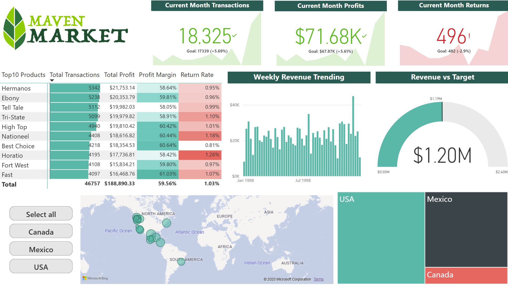

Selected Screens (Static)
These images mirror the live dashboard for quick review and for viewers without access.


Metrics & Definitions
1) Revenue
- Revenue: Total Revenue (Power BI measure).
- Returns: Return Amount (Power BI measure).
- Net Sales: Power BI Net Sales measure.
2) Cost
- COGS: Total Cost (Power BI measure).
- Gross Profit & Gross Margin % (Power BI measures).
⚠️ Important: Gross Profit is computed from the sales side only; return cost is not deducted because the
Return_Data table lacks a reliable return‑cost field. This avoids fabricating losses and keeps margin truthful.3) Operating Expenses (OpEx)
- Current dataset has no explicit Admin/MoH/Marketing breakdown. Leave blank or supplement with a hypothetical budget/expense table if needed.
4) Profit
- EBIT (Operating Profit): currently approximated as EBIT = Gross Profit.
- Future expansion: EBIT = Gross Profit − OpEx once Admin/MoH/Marketing tables are added.
Insight Framework & Storyline
- Topline Performance
- Revenue vs Target (Gauge/Line)
- Net Sales vs Budget
- Returns % of Revenue
- Cost & Margin
- COGS vs Budget
- Gross Profit & Gross Margin %
- Expenses & EBIT (future OpEx data)
- Expense category comparison
- EBIT vs Budget
Analytical Summary Table
Latest month: Dec‑1998. vs Budget uses Prior Month actual (Nov‑1998). Alt target: PM×1.05 → Revenue +0.57%, Net Sales +0.64%.
| Metric | Value | vs Budget | vs Prior Year | Note |
|---|---|---|---|---|
| Total Revenue | $120.16k | ▲ +5.60% | ▲ +110.94% | Momentum led by top brands (Hermanos/Tell Tale) |
| Net Sales | $118.98k | ▲ +5.67% | ▲ +110.83% | Returns ratio stable / improving |
| Returns % of Revenue | 0.99% | • −0.07 pp | ▼ +0.05 pp | Watch high‑return SKUs |
| COGS | $48.48k | ▼ +5.58% | ▼ +111.08% | Mix & discount effects |
| Gross Margin % | 59.66% | • +0.01 pp | • −0.03 pp | Stable overall; pressure in discount‑heavy SKUs |
| EBIT | $71.68k | ▲ +5.61% | ▲ +110.84% | Currently = Gross Profit (no OpEx yet) |
Visual Evidence


Place exported images in /assets/ and update filenames above. Keep sensitive data off screenshots if sharing publicly.
Key Findings (paired with the report)
- Revenue vs Budget: Outperformed budget and prior year; momentum led by top brands (Hermanos/Tell Tale).
- Margins & Costs: COGS up YoY yet margin steady (~59.7%); focus on discount‑heavy SKUs.
- OpEx readiness: When Admin/MoH/Marketing data becomes available, run 5–10% OpEx scenarios to protect EBIT.
- Regional/Store dispersion: Top stores contribute a disproportionate share of net sales; prioritize high‑ROI locations.
Takeaways / Recommendations
- Run cost‑cut scenarios (5–10%) prioritizing Admin/MoH when OpEx data is added; monitor EBIT recovery path.
- Double down on high‑margin categories and top‑performing regions/stores; trim low‑ROI marketing.
- Build a returns quality dashboard to target high‑return SKUs and training opportunities.
Approach
- KPIs: Total Revenue, Net Sales, Gross Margin %, EBIT %, Returns Ratio, Rolling 60‑day Revenue.
- Modeling: Star schema with Calendar/Products/Stores/Regions/Customers dimensions related to Transaction and Return facts.
- Targets: Revenue Target = Prior Month Revenue × 1.05 for gauge comparison and monthly pacing.
- Time intelligence:
DATESINPERIOD,DATEADDfor rolling windows and PoP analytics. - UX: Topline overview → drilldowns (division/category/store) → region lens → returns overlay and net‑sales quality.
Data Cleaning & Methods
- Data quality checks: null order numbers; negative invoice values handled as credits; zero cost/quantity sanity checks.
- Join logic: Calendar drives filters; Returns modeled separately (no FK to transactions). Reconciled via measures such as All Returns/All Transactions.
- Measures: rolling revenue (60‑day), last‑month revenue/returns/transactions, weekend share, profit margin, net sales.
- Formatting: M/d/yyyy date format; currency formatting for financial KPIs.
Data Source & Reference
Dataset: Maven Market — sourced from Kaggle. Portfolio/educational use. View dataset on Kaggle ↗
Project Files
About
Data/Financial analyst focusing on Power BI, DAX, SQL, and business storytelling.
Contact: wst.krystal@outlook.com
GitHub: @KrystalWang222